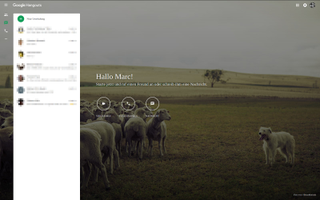

GooglePlus Hangouts
Achtung!
Die Verwendung dieses Howto geschieht auf eigene Gefahr. Bei Problemen mit der Anleitung melde dies bitte in der dazugehörigen Diskussion und wende dich zusätzlich an den Verfasser des Howtos.
Hinweis:
Diese Howto-Anleitung wurde zuletzt von march am 28.01.2017 unter Ubuntu 16.04 erfolgreich getestet.
Google+ Hangouts  (Stammlokal) ermöglicht Videochats für bis zu 10 Teilnehmer. Es können einzelne Personen oder ganze Kreise zu diesem eingeladen werden. Im Zugang von Google+
(Stammlokal) ermöglicht Videochats für bis zu 10 Teilnehmer. Es können einzelne Personen oder ganze Kreise zu diesem eingeladen werden. Im Zugang von Google+  wird die Teilname an einem Hangout angezeigt. Über die Funktion Hangout On Air können Übertragungen aufgezeichnet und live via YouTube-Kanal oder der eigenen Google+-Seite übertragen und auf der eigenen Internetseite eingebunden werden.
wird die Teilname an einem Hangout angezeigt. Über die Funktion Hangout On Air können Übertragungen aufgezeichnet und live via YouTube-Kanal oder der eigenen Google+-Seite übertragen und auf der eigenen Internetseite eingebunden werden.
Die Erweiterung funktioniert mit den Browsern Firefox, Chromium, Google Chrome und Vivaldi.
Installation¶
Fremdpaket¶
Um die Funktion mit Google+ verwenden zu können, wählt man von Downloadseite  das passende .deb-Paket für die eigene Rechnerarchitektur herunter (z.B. google-talkplugin_current_amd64.deb) und installiert [1] dieses.
das passende .deb-Paket für die eigene Rechnerarchitektur herunter (z.B. google-talkplugin_current_amd64.deb) und installiert [1] dieses.
Hinweis!
Fremdpakete können das System gefährden.
Das Fremdpaket bindet eine Paketquelle ein und die Browser-Erweiterung wird somit über die Paketverwaltung immer auf den aktuellen Stand gebracht.
|  |
| Google Hangouts |
Hangout¶
Nach dem Login über google.com oder die Google-Profilseite kann man sich mit einem Klick auf das entprechende Symbol (Videoanruf, Telefonanruf oder Nachricht) mit den Kontakten aus der Liste verbinden. Bei Auswahl der Videotelefonie öffnent sich ein neues Fenster. Hier kann man Leute einladen um mit ihnen eine Videokonferenz zu führen.
Hinweis:
Die Konferenzen können öffentlich gemacht werden.
Live-Übertragung¶
Live-Stream nach einloggen auf YouTube möglich.
Kontrollkästchen "Hangouts On Air aktivieren"
Nutzungsbedingungen
zuzustimmen YouTube-Konto verknüpfen
Hangout wird im YouTube-Konto gespeichert (öffentlich)
"Übertragung starten" → Countdown 5s
- Erstellt mit Inyoka
-
 2004 – 2017 ubuntuusers.de • Einige Rechte vorbehalten
2004 – 2017 ubuntuusers.de • Einige Rechte vorbehalten
Lizenz • Kontakt • Datenschutz • Impressum • Serverstatus -
Serverhousing gespendet von